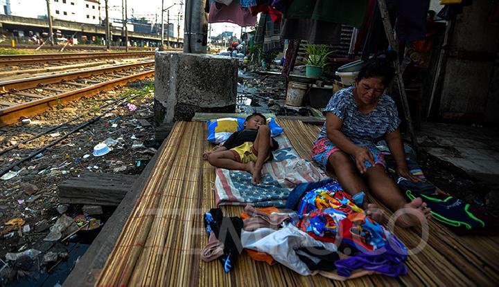

Kelaparan di Afrika yang Semakin Melanda
Kelaparan di Afrika adalah suatu kondisi serius di mana sejumlah besar penduduk di benua Afrika menghadapi kekurangan makanan yang ekstrem. Hal ini disebabkan oleh faktor-faktor kompleks seperti bencana alam, perubahan iklim, kemiskinan, serta masalah politik dan sosial.
Baca Selengkapnya